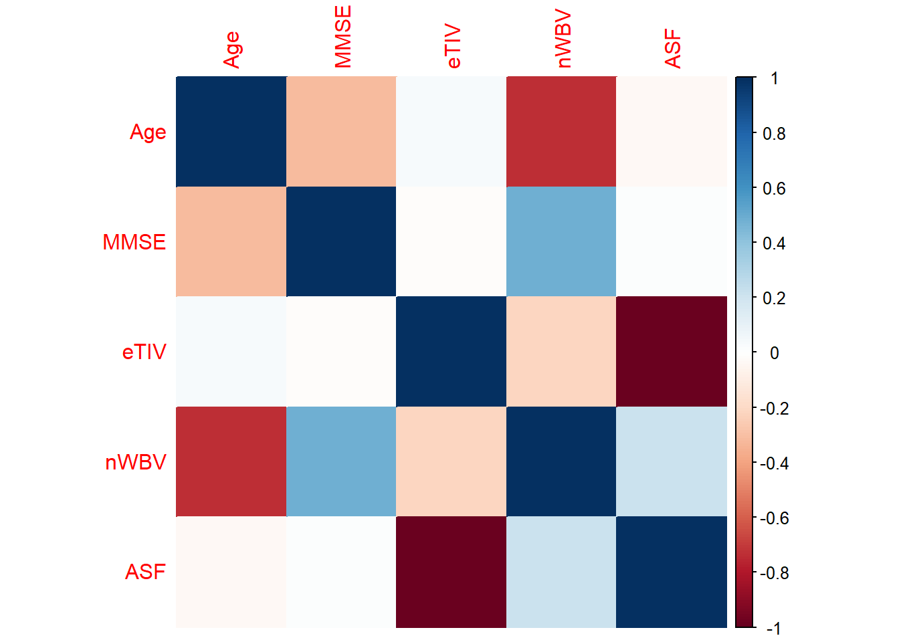
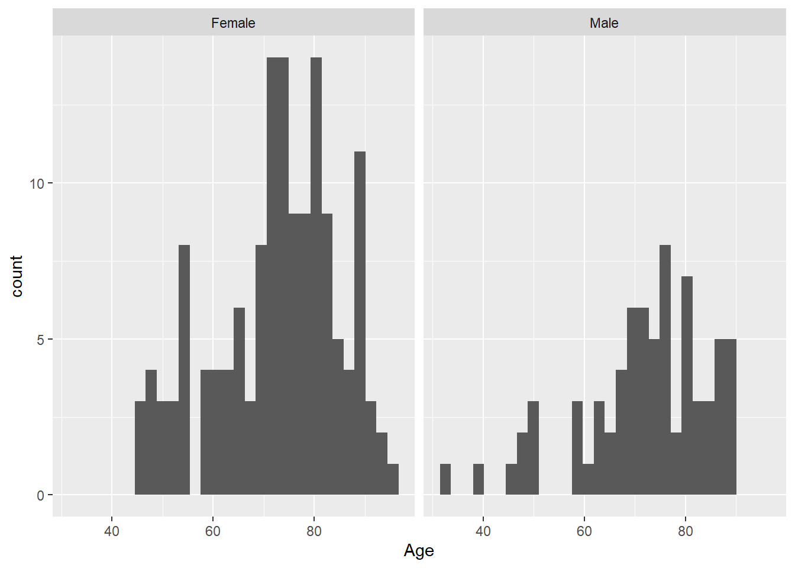
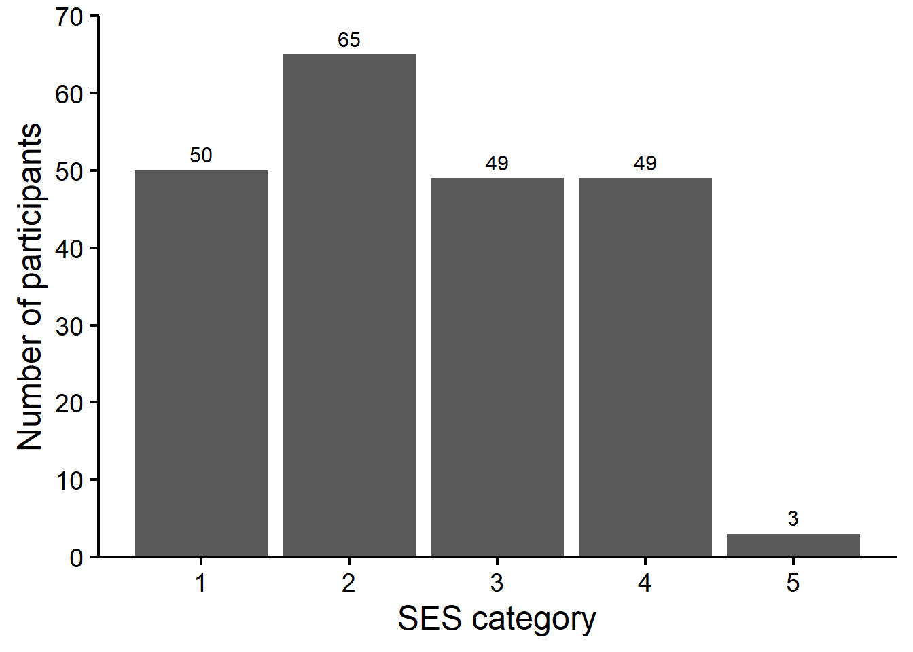

The dataset you will be using today contains MRI scan data from participants with and without dementia and was made available by the Open Access Series of Imaging Studies (OASIS) project. The raw dataset is available on Kaggle here. Today, we will be focusing on visualizing the dataset using R, an important first step in any data analysis project.
Import required libraries
Run the code chunk below to import the required libraries
Data preprocessing
@Hollie: If we don’t include this section, then we can preprocess and save the csv file for later use. Explanation of the columns/data can be found here: https://www.oasis-brains.org/files/oasis_cross-sectional_facts.pdf
@Andrew: I would prefer to preprocess and save somehwere, this is just another part that could go wrong
Exploring the data
The first thing we should do is to quickly explore the data. Run the code below to see the data that you’ve been provided. How many columns (features) and how many rows are there in your dataset? Do any features appear to be categorical? Continuous?
# For continious data, you can get quickly get summary statistics summary(data_clean)
male_or_female CDR Educ SES
Length:216 Length:216 Min. :1.000 Min. :1.000
Class :character Class :character 1st Qu.:2.000 1st Qu.:2.000
Mode :character Mode :character Median :3.000 Median :2.000
Mean :3.231 Mean :2.491
3rd Qu.:4.000 3rd Qu.:3.000
Max. :5.000 Max. :5.000
Age MMSE eTIV nWBV
Min. :33.00 Min. :15.00 Min. :1123 Min. :0.6440
1st Qu.:66.00 1st Qu.:26.00 1st Qu.:1346 1st Qu.:0.7150
Median :73.00 Median :29.00 Median :1446 Median :0.7485
Mean :72.44 Mean :27.32 Mean :1459 Mean :0.7505
3rd Qu.:81.00 3rd Qu.:30.00 3rd Qu.:1536 3rd Qu.:0.7860
Max. :96.00 Max. :30.00 Max. :1992 Max. :0.8410
ASF
Min. :0.881
1st Qu.:1.142
Median :1.214
Mean :1.217
3rd Qu.:1.304
Max. :1.563
You can see from the table that there are 9 columns:
Age - Age of participants
ASF - Atlas scaling factor
CDR - Clinical Dementia Rating
Educ - Education level
eTIV - Estimated total intracranial volume
male_or_female - Gender of participants
MMSE - Mini-Mental State Examination
nWBV - Normalized whole brain volume
SES - Socioeconomic status
Correlation between variables
Let’s look at the continuous variables first and determine if there are any correlations between them. You can do this very easily using R by first sub setting the continuous features, computing a correlation matrix and plotting the correlation scores with a heatmap.
# Get all continuous variables into a single tibble numeric_data <- data_clean %>%select(Age:ASF)# compute correlation matrixcorrelation_matrix <-cor(numeric_data)# visualize correlation matrixcorrplot(correlation_matrix, method="color")

Based on the correlation scores:
Are there any features that are highly or anti-correlated?
Why do you think its important to identify correlated features?
More data exploration
Faceting by categorical variables
Another aspect of exploratory data analysis is the use of faceting to determine the distribution of values across different categories. For example, you might be interested in determining if there are differences in the age distributions of males and females are in your dataset. Again, you can do this very easily with R using ‘facet_wrap’.
`stat_bin()` using `bins = 30`. Pick better value with `binwidth`.

There seems to be a slight difference in the age distribution of males and females. Further statistical analyses will be needed to answer this question.
Can you modify the code to plot the distribution of participant age when faceted by CDR category? Are there any interesting observations you can make about this dataset?
#Students to fill in this section
Counting distinct feature categories
When exploring your data, it might also be useful for you to count the distribution of the categories that are present in your feature of interest. For example, how many males versus females are in your dataset or how many participants have dementia. Doing these exploratory analyses can often tell you about possible imbalances in your data. Here we plot a simple barplot to determine the count of our SES categorical variables.
@Hollie, if we want to give them a bit of an exercise, we could make the figure below horrible and correct the figure in the next section.
@Andrew, I think we should add a few comments on the code itself, It might not be very apparent for new R users!
You can see that SES categories of 1-4 are most prevalent in the dataset and very few participants are in category 5. Can you modify the code to plot the ‘Educ’ feature? What can you conclude from this chart?
# Students to fill in this section
Can we improve on the visualization?
So far, we have been using the default ggplot theme for our visualizations. Can we improve the visualizations? Here are some ideas: change the aesthetics of the plot, add labels to barcharts, change y-axis tick mark intervals and limits, add better descriptions to axes.
ggplot(categorical_data, aes(SES)) +geom_bar() +# Add some text to label barsgeom_text(stat ='count', aes(label = ..count..), vjust =-0.55, size =4) +# Extend y axis so it's not cut-offscale_y_continuous(breaks =seq(0, 70, by =10), limits=c(0,70), expand =c(0, 0)) +labs(x ="SES category", y="Number of participants") +theme_bw(base_size =18) +theme(panel.grid.major =element_blank(),panel.grid.minor =element_blank(),panel.border =element_blank(),panel.background =element_blank(),axis.line =element_line(colour ="black"),axis.ticks =element_line(colour ="black"),axis.text =element_text(colour ="black"),axis.title =element_text( colour ="black"))

You can modify the code above to customize the ‘Educ’ bar chart you created earlier.
@Andrew, maybe we could give them a bit more guidance here, what about colours, titles. I feel like they could get a little stuck here thinking about what to do!
Plotting more than 2 variables
@Hollie: Perhaps you can make a start on this? I was thinking a scatterplot of something like eTIV and nWBV and color-coded by CDR category but I’ll let you decide what is best! You can even create a whole new section with a new dataset :-).
Congratulations, you now have the skills to create your own visualizations in R. We have provided a link to a new dataset for you to practice your new skills!
# TODO: Link to new dataset here (maybe the diabetes one?)#@Andrew I think thats a good idea